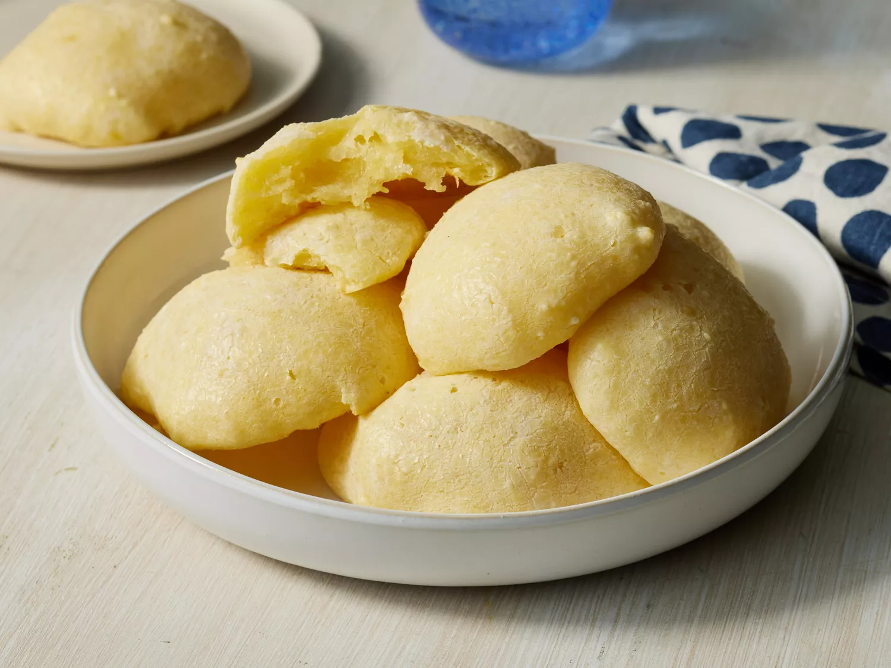

Pão de queijo

Description
Pão de queijo are yummy gluten-free, wheat-free breads that are good for those with celiac disease or gluten intolerance. Serve them plain or with marinara sauce. For more variety, try adding an herb seasonings, such as Italian seasoning, or try substituting other cheeses for the Parmesan.
(text from Allrecipes).
Ingredients
- ½ cup olive oil or butter
- ⅓ cup water
- ⅓ cup milk or soy milk
- 1 teaspoon salt
- 2 cups tapioca flour
- 2 teaspoons minced garlic
- ⅔ cup freshly grated Parmesan cheese
- 2 beaten eggs